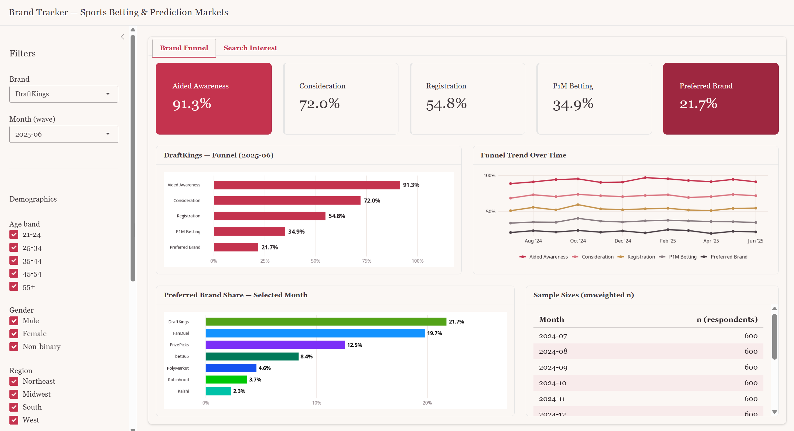
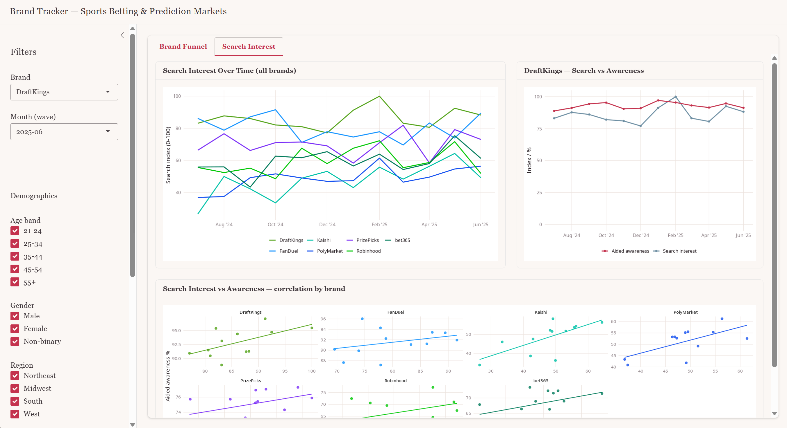

Prediction markets stopped being a niche curiosity in 2024. Polymarket cleared roughly $9 billion in trading volume on the year, most of it riding the US presidential election. Kalshi won a landmark court ruling in September 2024 that cleared it to list political event contracts, sending its volumes climbing into 2025. Sportsbooks still owned the category by share, but the ground was moving fast.
To see how that shift was landing with consumers, I built a five-stage brand funnel tracker across all three competing categories: legal sportsbooks, CFTC-regulated event contracts, and prediction markets. It runs on a synthetic survey dataset I generated with Claude Sonnet 4.6 (monthly reads, July 2024 through June 2025), paired with real Google Trends data, and tests whether search interest leads or lags brand health.
Note: the survey figures are a methods demonstration, generated to show the reasoning a live tracker enables, not to report real market share. The Google Trends data is real.
The dashboard is built in R with Shiny and deployed via Shinylive, so it runs entirely in the browser with no server.
Two tabs, Brand Funnel and Search Interest, both responding live to the sidebar filters.

The Brand Funnel tab: the funnel, its trend over time, and preferred brand share for the selected filters.

The Search Interest tab: each platform's Google Trends index against aided awareness, to spot lead and lag.
A year of monthly reads surfaces patterns a single snapshot would miss: